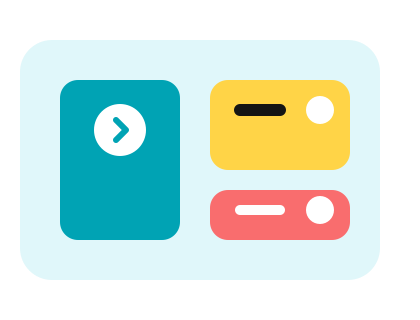

7/24 Adana Servisi
Beyaz Eşyanız İçin Adana'nın Tüm İlçelerinde Anında Müdahale
Yetkili eğitimli teknisyenlerimizle aynı gün içerisinde onarım, bakım ve montaj desteği sağlıyoruz. Cihazınızı çalışır hale getirmek için bize güvenin.
